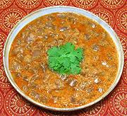

|
Aloe Vera CurryIndia - Rajasthan - Gawar Patha | ||||
| Serves: Effort: Sched: DoAhead: |
2 main *** 50 min 90%Yes |
In India, Aloe Vera is used as a cooked vegetable. This recipe, from the northwest, is a light summer dish, mildly spiced. You will be surprised by the light crunchiness of what looks like clear jello cubes. | |||
|
2 ------ 1 1/2 1/2 1/2 1/2 2/3 ------ 1 1 1 ------ 1 1/16 2 1-1/2 1-1/2 |
--- t t t t t t --- in --- T t T T T |
Aloe Vera leaves (1) -- Ground Spices Coriander seed Fenugreek seeds Chili powder (2) Amchoor (3) Jaggery (4) Salt -- Whole Spices Cardamom, Black Star Anise Cinnamon ---------- Oil, Mustard (5) Asafoetida (6) Water Tomato purée Yogurt |
PREP - (45 min)
|